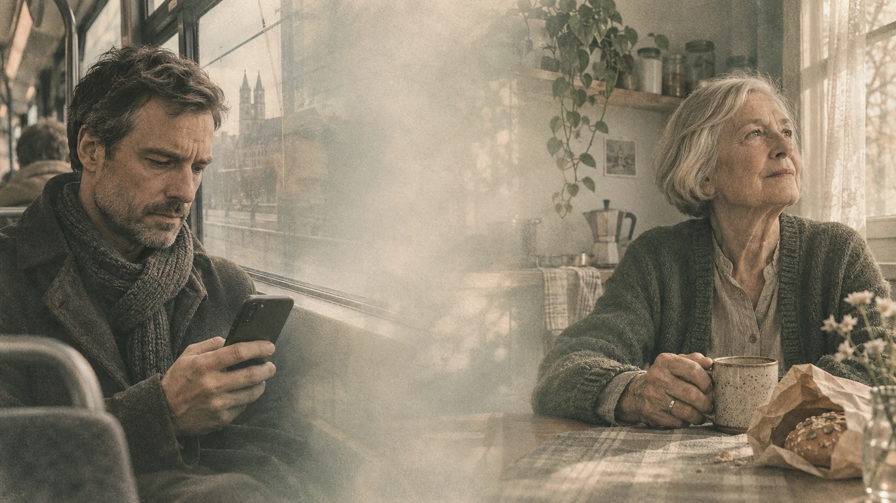
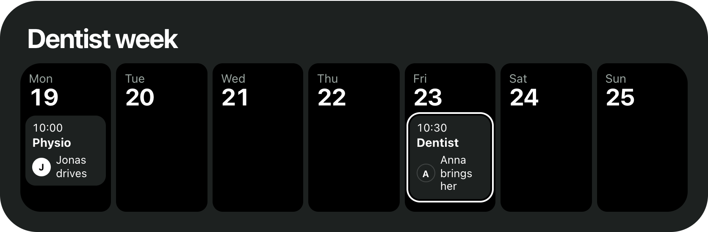

Claudia
A voice companion for older adults and the people who care for them.

Pilot #6 · Mental health of family caregivers
After “I’m fine.”
Did Mum take her tablets?
Is anyone going round today?
One more call to check. Less time to just talk.
What competitors do
- DRK Hausnotruf
- A wearable alarm button connects to a trained responder.
- MyTherapy
- Medication reminders and a dose log.
- ElliQ
- Voice companionship, reminders and a caregiver app.
Shared care starts with a conversation.
Grete answers aloud and chooses which private notes to share. The diary keeps her confirmations. The calendar shows who can lend a hand.
- Calendar
- Assign a lift 6 flows
- Pill checker
- Confirm a dose 6 flows
- Location & safety
- Call for help 5 flows
- Q&A / setup
- Pair by voice 6 flows
23 playable storyboard flows
Demo film
Who’s taking Mum on Friday?

Thank you.
We’d like to explore a family memory capsule, in Grete’s own voice.
- First commit
- First revision
- Files
- Text lines
Playback is unavailable. Open the local film